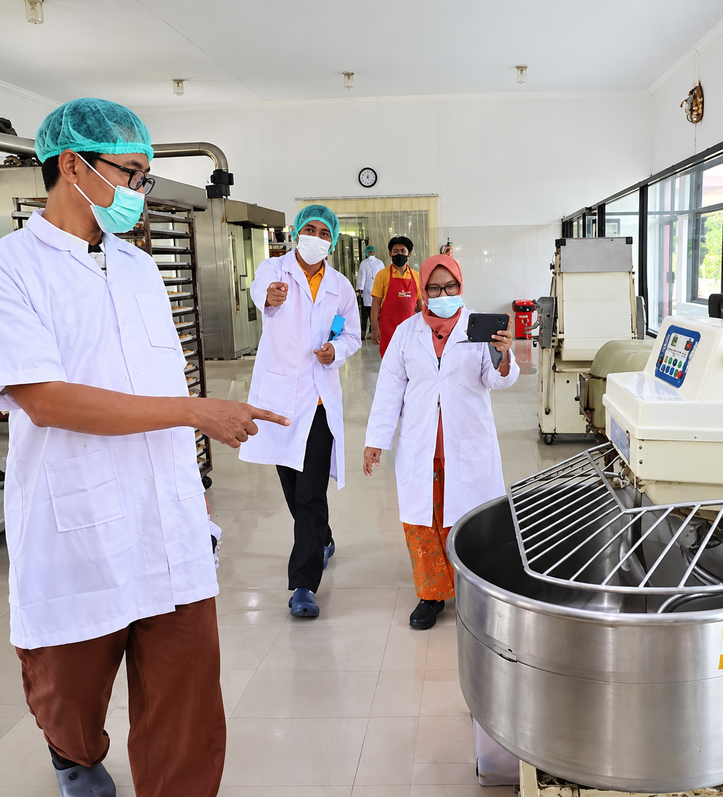
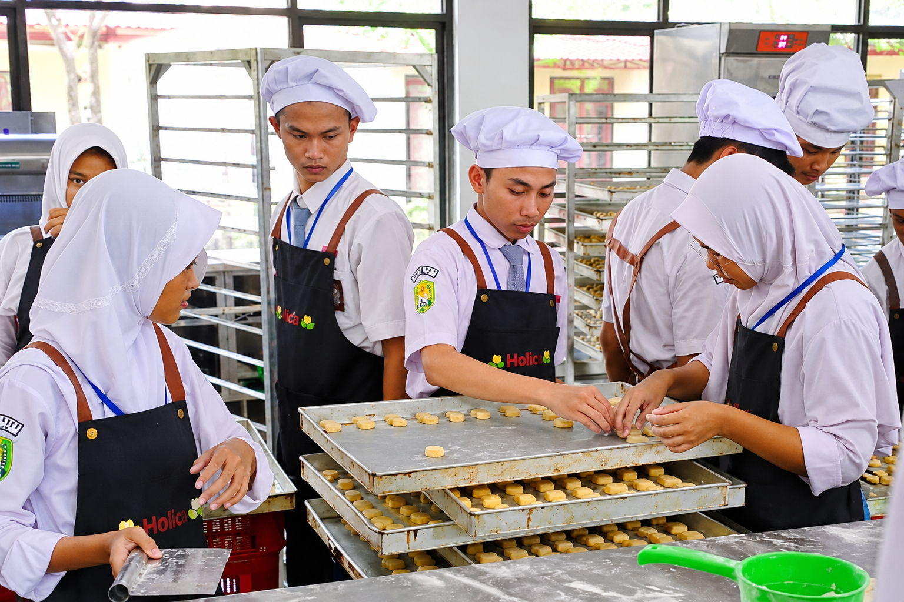

Tefa Bakery merupakan unit usaha Teaching Factory (TEFA) Politeknik Negeri Jember yang bergerak di bidang produksi dan penjualan berbagai produk bakery, pastry, dan minuman. TEFA Bakery menjadi sarana praktik nyata bagi mahasiswa untuk mengembangkan keterampilan di bidang kuliner, kewirausahaan, dan pelayanan pelanggan.
Tentang Kami
Mengenal lebih dekat TEFA Bakery, unit usaha Teaching Factory
Politeknik Negeri Jember.
Profil
TEFA Bakery merupakan unit usaha Teaching Factory (TEFA) Politeknik Negeri Jember yang bergerak di bidang produksi dan penjualan berbagai produk bakery, pastry, dan minuman. TEFA Bakery menjadi sarana praktik nyata bagi mahasiswa untuk mengembangkan keterampilan di bidang tata boga, kewirausahaan, dan pelayanan pelanggan.


Sejarah
TEFA Bakery di Politeknik Negeri Jember (Polije) berawal dari pengembangan Teaching Factory sebagai fasilitas pembelajaran praktik yang menghubungkan kegiatan pendidikan dengan kebutuhan industri.
Melalui kegiatan produksi dan pelayanan, TEFA Bakery menjadi tempat mahasiswa mempraktikkan keterampilan sesuai bidang keahlian. Selain sebagai sarana pembelajaran, TEFA Bakery juga menyediakan berbagai produk bakery untuk memenuhi kebutuhan pelanggan.
Dengan adanya Teaching Factory, mahasiswa dapat memperoleh pengalaman kerja secara langsung serta mengembangkan kemampuan dalam bidang produksi, pelayanan, dan kewirausahaan.
Visi & Misi
Visi
Membangun inovasi bakery bersama generasi muda dengan kualitas terbaik melalui praktik dan pelayanan unggul serta menjadi pusat pembelajaran berbasis produksi dalam layanan nyata.
Misi
- Menyelenggarakan dan mengembangkan pendidikan vokasi yang inklusif, berkarakter tangguh, berkualitas, inovatif, berkelanjutan, dan berdaya saing global.
- Menjadi ruang pembelajaran berbasis produksi bagi mahasiswa Polije, serta menerima kunjungan edukasi/PKL dari pelajar (TK, SD, SMP, hingga SMK)
- Menyediakan produk bakery dan kopi berkualitas tinggi yang diproduksi fresh setiap hari dengan standar industri nyata, serta melayani pemesanan/catering untuk umum.